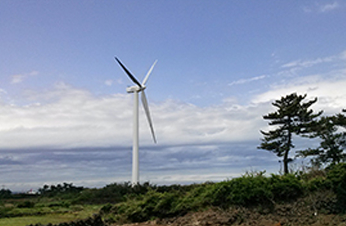
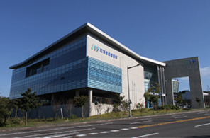
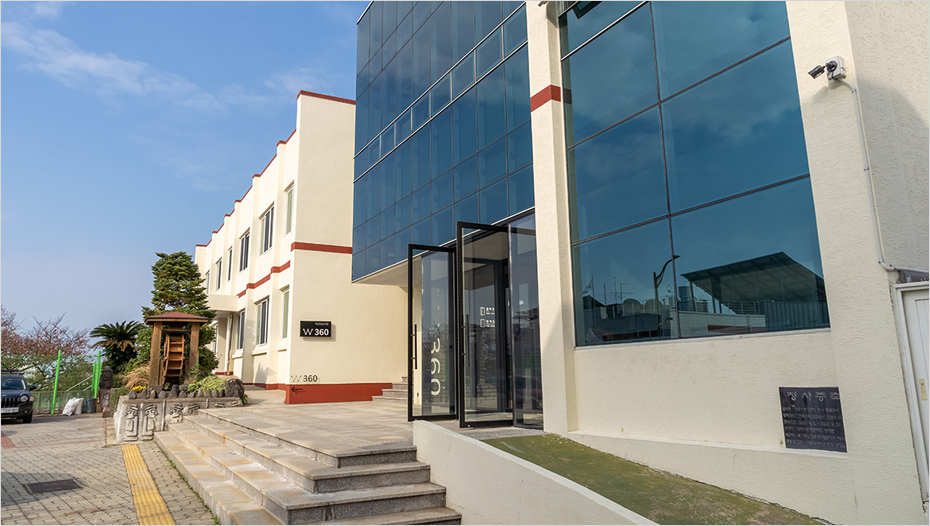

Information on Support Institutions
- Home
- Investment Environment
- Information on Support Institutions
Information on Jeju’s Support Institutions

Jeju Special Self-Governing Province
Jeju Free International City Development Center
Jeju Energy Corporation
Jeju Province Development Co. (JPDC)
Jeju Technopark
Jeju Center for Creative Economy and Innovation
Foreign Investment Promotion Division of Tourism Bureau, Jeju Special Self-Governing Province

- Address : 6, Munyeon-ro, Jeju City, Jeju Special Self-Governing Province, 63122
- Contact : +82-64-710-3372 ~ 5 / zheng@korea.kr
The Foreign Investment Promotion Division develops policies for attracting foreign investment to Jeju Free International City and promotes activities to attract investment from home and abroad.
The division provides domestic and foreign investors with total management services, including investment consulting, incentives, and follow-ups for successful investment.
Foreign Investment Promotion Division of Tourism Bureau
-
Foreign Investment Policy Team
- evelopment of investment policies
- Investment promotion zones
- Foreign investment zones
- Management of real estate investment and immigration system
-
Foreign Investment Promotion Team
- Attracting and promotion of domestic businesses
- Investment incentive support for domestic businesses
- Attracting and promotion of foreign investment
- Investment incentive support for foreign businesses
-
Tourist Attraction Development Team
- Approval and management of tourism development projects
-
Resort Development Team
- Approval and management of resort development projects

Future Strategies Bureau, Jeju Special Self-Governing Province

- Address : 64, Shindae-ro, Jeju City, Jeju Special Self-Governing Province, 63125
- Website : https://www.jeju.go.kr/group/part29/dept/org.htm
Future Strategies Bureau, Jeju Special Self-Governing Province
-
Low-Carbon Policy Division
- Carbon-Free Island 2030 (CFI2030) Project
- Government-led offshore wind power plant project
- Development of energy self-sufficient villages
- Promotion and dissemination of EV-related industries
-
Future Strategy Division
- Creation of an industrial ecosystem in response to the Fourth Industrial Revolution of Jeju
- Operation of the Jeju Fourth Industrial Revolution Strategic Fund
- Promotion of new ICT industries
- Promotion of blockchain industries
- Promotion of the cosmetics industry of Jeju
- Promotion high-tech startups
- Industrialization of microbial resources
-
Digital Convergence Division
- Creation of an industrial ecosystem for big data
- Development of a data hub on Jeju
- Establishment of a data-driven IoT platform
- Smart drones
- A drone regulatory sandbox and Drone Special Freedom Zone
- Promotion and support of ICT businesses

Jeju Free International City Development Center (JDC)
JDC is a state-run public enterprise which is dedicated to developing Jeju Free International City and is governed by the Ministry of Land, Infrastructure and Transport.
This center promotes core industries for developing the free international city, including high-tech, tourism, education, healthcare, and clean industry.

- Jeju Free International City Development Center Website : https://www.jdcenter.com
Jeju Energy Corporation (JEC)
JEC is a public enterprise carrying out the government-led renewable energy development project which encompasses development, production, operation, and supply of renewable energy as well as R&D by utilizing unlimited eco-friendly energy sources on Jeju Island.
It is dedicated to promoting the Carbon-Free Island 2030 project aimed to improve the energy self-sufficiency of Jeju Island.


- Jeju Energy Corporation Website : https://www.jejuenergy.or.kr

-

 Dongbok/Bukchon Wind Power Generation Complex
Dongbok/Bukchon Wind Power Generation Complex
-

 Solar power generation complex utilizing public facilities
Solar power generation complex utilizing public facilities
-
 Shinchang Wind Power Generation Complex
-

 Gimnyeong Wind Power Generation Complex
Gimnyeong Wind Power Generation Complex
-
 Haengwon Wind Power and Solar Power Generation Complex & Renewable Energy Promotion Center
Haengwon Wind Power and Solar Power Generation Complex & Renewable Energy Promotion Center
-
 Gashi-ri Wind Power and Gyorae-ri Solar Power Generation Complex
Gashi-ri Wind Power and Gyorae-ri Solar Power Generation Complex
Jeju Province Development Corporation (JPDC)
JPDC is a local public enterprise which has developed underground water on Jeju Island and produces Jeju Samdasoo, Korea’s leading mineral water brand.

- Jeju Province Development Corporation Website : http://www.jpdc.co.kr
Key Projects of JPDC
Edible Mineral Water Project
- The largest market share comprising 42% of Korea’s mineral water market
- Jeju <Samdasoo> as a leading mineral water brand in Korea
- Operation of factories with annual production of 830,000 tons and R&D center

Tangerine Processing Project
- Operation of factories processing tangerine concentrate (700 tons per day)
- Development of the [Jeju Samdasoo Jeju Mandarin] juice brand
R&D projects
- Preservation and management of groundwater on Jeju Island and R&D for quality improvement
Public Housing Project
- Rental housing project for Jeju residents

※ Relevant links : http://www.jpdc.co.kr/samdasoo/index.htm
Jeju Technopark
Jeju Technopark provides solutions for local industrial development and business growth, including technological development, industrialization support, marketing, and nurturing of human resources.
It offers business services such as technological development and business support programs, and information on a range of industries.

- Jeju Technopark Website : http://www.jejutp.or.kr
Status of Facilities Operated in Jeju Technopark
-

 Bio Convergence Center
Bio Convergence Center
- Support of the industrialization of eco-friendly cosmetics and foods produced on Jeju Island
-

 Digital Convergence Center
Digital Convergence Center
- Support of Jeju-based ICT businesses
- Operation of a big data center on Jeju Island
-
 Lava Seawater Industrialization Support Center
Lava Seawater Industrialization Support Center
- http://www.jejulavawater.com
-
 Jeju Biodiversity Research Institute
Jeju Biodiversity Research Institute
- Research on the industrialization of subtropical biological resources on Jeju Island
-

 Energy Convergence Center
Energy Convergence Center
- Support of Jeju-based ICT businesses
- Operation of a big data center on Jeju Island
-

 Headquarters
Headquarters
- Support of Jeju-based businesses and promotion of industries
Jeju Creative Economy Innovation Center
Jeju Creative Economy Innovation Center is Jeju’s first startup support institution which is committed to developing the startup ecosystem of the island.
This center provides information on startups on Jeju and investment support.

- Jeju Creative Economy Innovation Center Website : http://jccei.kr
Major Programs
- Support for residency and incubation of startups
- Operation of incubating programs
- A seed money investment project
- Operation of a residence support program and a remote work program
- Permanent operation of startup support and training programs